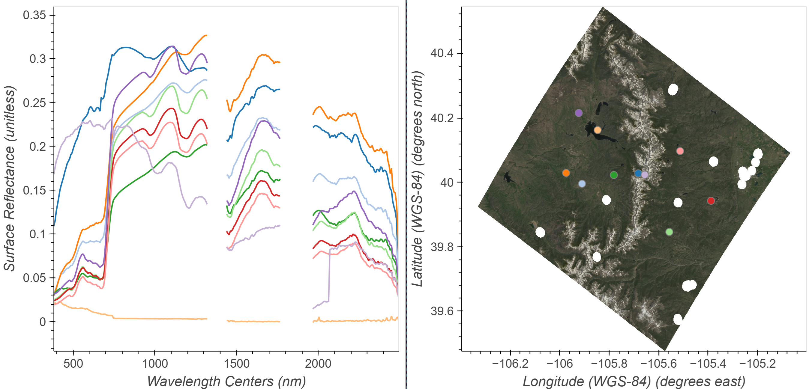

# Import Packages
import math
import csv
import earthaccess
import numpy as np
import pandas as pd
import geopandas as gpd
import rioxarray as rxr
import xarray as xr
import hvplot.xarray
import holoviews as hv
import geoviews as gv
import cartopy.crs as ccrs
from modules.emit_tools import emit_xarray, ortho_xrEMIT L2A Reflectance Fundamentals
Summary
This notebook will explain how to access Earth Surface Mineral Dust Source Investigation (EMIT) data programmatically using the earthaccess Python library. earthaccess is a useful Python library that facilitates finding and downloading or streaming data over HTTPS or s3. earthaccess searches NASA’s Common Metadata Repository (CMR), a metadata system that catalogs Earth Science data and associated metadata records, then can be used to download granules or generate lists of granule search result URLs. After accessing the data, we will open visualize the EMIT L2A Reflectance Data (EMITL2ARFL), and extract spectral values for a series of points using an interactive plot.

Background
The EMIT instrument is an imaging spectrometer that measures light in visible and infrared wavelengths. These measurements display unique spectral signatures that correspond to the composition on the Earth’s surface. The EMIT mission focuses specifically on mapping the composition of minerals to better understand the effects of mineral dust throughout the Earth system and human populations now and in the future. More details about EMIT and its associated products can be found in the README.md and on the EMIT website.
The L2A Reflectance Product contains estimated surface reflectance. Surface reflectance is the fraction of incoming solar radiation reflected Earth’s surface. Materials reflect proportions of radiation differently based upon their chemical composition. This means that reflectance information can be used to determine the composition of a target. In this guide you will learn how to plot a band from the L2A reflectance spatially and look at the spectral curve associated with individual pixels.
Requirements
- A NASA Earthdata Login account is required.
Learning Objectives
- How to find EMIT data using
earthaccess - How to open an EMIT
.ncfile as anxarray.Dataset - How to work with EMIT L2A Reflectance data
- How to mask and quality filter EMIT L2A Reflectance data
Setup
Import the required Python libraries.
Note that we we are importing a local module for handling EMIT data called emit_tools.
Authentication
earthaccess creates and leverages Earthdata Login tokens to authenticate with NASA systems. Earthdata Login tokens expire after a month. To retrieve a token from Earthdata Login, you can either enter your username and password each time you use earthaccess, or use a .netrc file. A .netrc file is a configuration file that is commonly used to store login credentials for remote systems. If you don’t have a .netrc or don’t know if you have one or not, you can use the persist argument with the login function below to create or update an existing one, then use it for authentication.
If you do not have an Earthdata Account, you can create one here.
auth = earthaccess.login(persist=True)Searching for Collections
The EMIT mission produces several collections or datasets available via the NASA Earthdata cloud archive.
To view what’s available, we can use the search_datasets function and with the keyword argument.
# Retrieve Collections
collections = earthaccess.search_datasets(keyword='EMIT')
# Print Quantity of Results
print(f'Collections found: {len(collections)}')If you print the collections object you can explore all of the json metadata.
# Print collections
# collectionsWe can also create a list of the short-name, concept-id, and version of each result collection using list comprehension. These fields are important for specifying and searching for data within collections.
collections_info = [
{
'short_name': c.summary()['short-name'],
'collection_concept_id': c.summary()['concept-id'],
'version': c.summary()['version'],
'entry_title': c['umm']['EntryTitle']
}
for c in collections
]
pd.set_option('display.max_colwidth', 150)
collections_info = pd.DataFrame(collections_info)
collections_infoThe collection concept-id is the best way to search for data within a collection, as this is unique to each collection. The short-name can be used as well, however the version should be passed as well as there can be multiple versions available with the same short name. After finding the collection you want to search, you can use the concept-id to search for granules within that collection.
Searching for Granules
A granule can be thought of as a unique spatiotemporal grouping within a collection. To search for granules, we can use the search_data function from earthaccess and provide the arguments for our search. Its possible to specify search products using several criteria shown in the table below:
| dataset origin and location | spatio temporal parameters | dataset metadata parameters |
|---|---|---|
| archive_center | bounding_box | concept_id |
| data_center | temporal | entry_title |
| daac | point | granule_name |
| provider | polygon | version |
| cloud_hosted | line | short_name |
For this example we will search for the EMIT L2A Surface Reflectance using a bounding box, temporal parameters, and add a cloud_cover parameter. Note that not all datasets have cloud cover information in their metadata, so this parameter may not work for all datasets.
# Boulder CO Area Bounding Box
bbox = (-105.301, 39.957, -105.178, 40.094)
bboxPass the bbox Python variable to the bounding_box argument, then enter a start and end date for the temporal argument minimum and maximum cloud_cover as Python tuples.
results = earthaccess.search_data(
short_name='EMITL2ARFL',
bounding_box=bbox,
temporal=('2023-06-01','2023-09-30'),
cloud_cover=(0,50)
)
print(f"Granules Found: {len(results)}")We can preview our results by printing a single one.
print(results[0])Use data_links() convenience function to extract the data links for all of the granules. In this case there are multiple files associated with a single granule.
emit_results_urls = [granule.data_links(access="external") for granule in results]
emit_results_urls[:2]Flatten our list of lists into a single list.
url_list = [url for urls in emit_results_urls for url in urls]
url_listWorking with EMIT Data
EMIT collections and their associated granules are archived and distributed from NASA’s Earthdata Cloud. Because of this, data assets/files can be accessed in a variety of ways. Data distributed from Earthdata Cloud can be:
Downloaded – This has been a supported option since the inception of NASA’s DAACs. Users can use the data link(s) to download files to their local working environment. This method works in both cloud and non-cloud environments.
Streamed – Streaming enables on-the-fly reading of remote files (i.e., files not saved locally). However, the accessed data must fit into the workspace’s memory. Streaming works in both cloud and non-cloud environments. Streaming data stored in the cloud without downloading is called in-place access or direct S3 access. this is only available when working in a cloud environment deployed in AWS us-west-2.
Downloading Data
The download() function from earthaccess can be used to efficiently download the data links from a earthaccess search results. A list of URLs can also be passed to the function. The convenient part of using the download() function is that authentication is taken care of on behalf of the user.
Download earthaccess search results
# earthaccess.download(results, local_path='../data/')Download from URL list
#earthaccess.download(url_list, local_path='../data/')Streaming Data
Data in NASA Earthdata Cloud can be read into the workspace by streaming the data, that is, no download is required. Here we will assign a single URL for EMIT reflectance and for the mask layer from our url_list to read in and explore.
emit_rfl = url_list[0]
emit_rflemit_qa = url_list[2]
emit_qaTo access data from NASA, you’ll need to provide your Earthdata Login credentials. When streaming this can best be done using the token or cookies set up by the earthaccess library. Since we’ve already logged in, we can start an fsspec session to manage our connection to a remote file, including sending credentials. This allows other libraries to work with a URL as if it is a local file.
# Get HTTPS Session using Earthdata Login Info
fs = earthaccess.get_fsspec_https_session()
# Use the session (i.e., fs) to connect to the file
emit_fp = fs.open(emit_rfl)
emit_qa_fp = fs.open(emit_qa)We now have an authenticated connection to the data links. We can now start exploring these data.
Opening and Exploring EMIT Reflectance Data
EMIT L2A Reflectance Data are distributed in a non-orthocorrected spatially raw NetCDF4 (.nc) format consisting of the data and its associated metadata. Inside the L2A Reflectance .nc file there are 3 groups. Groups can be thought of as containers to organize the data.
- The root group that can be considered the main dataset contains the reflectance data described by the downtrack, crosstrack, and bands dimensions.
- The
sensor_band_parametersgroup containing the wavelength center and the full-width half maximum (FWHM) of each band.
- The
locationgroup contains latitude and longitude values at the center of each pixel described by the crosstrack and downtrack dimensions, as well as a geometry lookup table (GLT) described by the ortho_x and ortho_y dimensions. The GLT is an orthorectified image (EPSG:4326) consisting of 2 layers containing downtrack and crosstrack indices. These index positions allow us to quickly project the raw data onto this geographic grid.
To work with the EMIT data, we will use the emit_tools module. There are other ways to work with the data and a more thorough explanation of the emit_tools in the EMIT-Data-Resources Repository.
Open the example EMIT scene using the emit_xarray function. In this step we will use the ortho=False argument (default) read in the data in its source non-orthocorrected form.
# Load the data to speed up future cells
emit_ds = emit_xarray(emit_fp, ortho=False).load()
emit_dsSince the wavelengths coordinate variable is indexed, we can use sel() functions to filter for specific wavelength values from our EMIT datacube, then visualize using hvplot.image()
# Select a band @ 850nm
rfl_850 = emit_ds['reflectance'].sel(wavelengths=850, method='nearest')
# Plot - Note we flip the y axis, so (0,0) is top left corner
rfl_850.hvplot.image(cmap='viridis',
aspect='equal',
frame_height=405,
fontscale=2).opts(title=f"{rfl_850.wavelengths:.3f} {rfl_850.wavelengths.units}", invert_yaxis=True)Note the orientation of the plotted image. Remember this is not orthocorrected and thus is not north up. You may notice that EMIT radiance and reflectance scenes rows of missing data in some scenes. This is due to EMIT’s on-board cloud filtering. Additionally, filtering can be applied using the mask layer (example later in this exercise).
Create an orthocorrected image of our data using the ortho_xr() function from the emit_tools module.
emit_ds = ortho_xr(emit_ds)
emit_dsDuring the orthorectification process we introduce fill values (-9999). To make a better visual, we can assign these to np.nan. At the same time we can also utilize the good_wavelengths flag from the sensor_band_parameters group to mask out bands where water absorption features were assigned a value of -0.01 reflectance. Typically data around 1320-1440 nm and 1770-1970 nm are noisy due to the moisture present in the atmosphere; therefore, these spectral regions offer little information about targets and can be excluded from calculations.
emit_ds['reflectance'].data[:,:,emit_ds['good_wavelengths'].data==0] = np.nan
emit_ds['reflectance'].data[emit_ds['reflectance'].data == -9999] = np.nan# Select Band
rfl_850 = emit_ds['reflectance'].sel(wavelengths=850, method='nearest')
# Plot
rfl_850.hvplot.image(cmap='viridis',
geo=True,
tiles='ESRI',
crs='EPSG:4326',
frame_width=720,
frame_height=405,
alpha=0.7,
fontscale=2).opts(title=f"{rfl_850.wavelengths:.3f} {rfl_850.wavelengths.units}",
xlabel='Longitude',ylabel='Latitude')We now have a orthorectified image that is north up!
Plotting Spectra
Similar to selecting a wavelength, we can select the spectra of an individual pixel closest to a specified latitude and longitude we want using the sel function from xarray. First grab the center coordinates of the scene to use as an example.
# Retrieve center pixel coordinates
scene_center = emit_ds.latitude.values[int(len(emit_ds.latitude)/2)],emit_ds.longitude.values[int(len(emit_ds.longitude)/2)]
scene_centerNow select and plot using hvplot.
# Extract a single point
point = emit_ds.sel(latitude=scene_center[0],longitude=scene_center[1], method='nearest')
# Plot
point.hvplot.line(y='reflectance',
x='wavelengths',
color='black').opts(title=f'Latitude = {point.latitude.values.round(3)}, Longitude = {point.longitude.values.round(3)}')We can also plot individual bands spatially by selecting a wavelength, then plotting. Select the band with a wavelengths of 850 nm and plot it using ESRI imagery as a basemap to get a better understanding of where the scene was acquired.
Applying Quality Masks to EMIT Data
The EMIT L2A Mask file contains some bands that are direct masks (Cloud, Dilated, Cirrus, Water, Spacecraft), and some (AOD550 and H2O (g cm-2)) that contain information calculated during the L2A reflectance retrieval. These may be used as additional screening, depending on the application.
Note: It is more memory efficient to apply the mask before orthorectifying.
emit_mask = emit_xarray(emit_qa_fp, ortho=True)
emit_maskList the quality flags contained in the mask_bands dimension.
emit_mask.mask_bands.data.tolist()As mentioned, we will use the Dilated Cloud Flag. Select that band with the sel function as we did for wavelengths before.
emit_cloud_mask = emit_mask.sel(mask_bands='Dilated Cloud Flag')
# mask fill values
emit_cloud_mask['mask'].data[emit_cloud_mask['mask'].data == -9999] = np.nanNow we can visualize our aggregate quality mask. You may have noticed before that we added a lot of parameters to our plotting function. If we want to consistently apply the same formatting for multiple plots, we can add those arguments to a dictionary that we can unpack into hvplot functions using **.
Create two dictionaries with plotting options.
size_opts = dict(frame_height=405, frame_width=720, fontscale=2)
map_opts = dict(geo=True, crs='EPSG:4326', alpha=0.7, xlabel='Longitude',ylabel='Latitude')emit_cloud_mask.hvplot.image(cmap='viridis', tiles='ESRI', **size_opts, **map_opts)Values of 1 in the mask indicate areas to omit. Apply the mask to our EMIT Data by assigning values where the mask.data == 1 to np.nan
emit_ds.reflectance.data[emit_cloud_mask.mask.data == 1] = np.nanWe can confirm our masking worked with a spatial plot.
emit_layer_filtered_plot = emit_ds.sel(wavelengths=850, method='nearest').hvplot.image(cmap='viridis',tiles='ESRI',**size_opts, **map_opts)
emit_layer_filtered_plotInteractive Spectral/Spatial Plots
Combining the Spatial and Spectral information into a single visualization can be a powerful tool for exploring and inspecting imaging spectroscopy data. Using the streams module from Holoviews we can link a spatial map to a plot of spectra.
We could plot a single band image as we previously have, but using a multiband image, like an RGB may help infer what targets we’re examining. Build an RGB image following the steps below.
Select bands to represent red (650 nm), green (560 nm), and blue (470 nm) by finding the nearest to a wavelength chosen to represent that color.
emit_rgb = emit_ds['reflectance'].sel(wavelengths=[650, 560, 470], method='nearest')We may need to adjust balance the brightness of the selected wavelengths to make a prettier map. This will not affect the data, just the visuals. To do this we will use the function below. We can change the bright argument to increase or decrease the brightness of the scene as a whole. A value of 0.2 usually works pretty well.
def gamma_adjust(rgb_da, bright=0.3):
"""
Adjust gamma across all bands in the RGB dataset.
"""
array = rgb_da.data
# Mask nan and negative values
invalid = np.isnan(array) | (array < 0)
valid = ~invalid
# Calculate gamma based on the mean of valid values
mean_valid = np.nanmean(array[valid])
gamma = math.log(bright) / math.log(mean_valid)
# Apply scaling and clip
scaled = np.full_like(array, np.nan)
scaled[valid] = np.power(array[valid], gamma)
rgb_da.data = np.clip(scaled, 0, 1)
return rgb_daemit_rgb = gamma_adjust(emit_rgb)Now that we have an RGB dataset, we can use that to create a spatial plot, and data selected by clicking on that ‘map’ can be inputs for a function to return values from the full dataset at that latitude and longitude location using the cell below. To visualize the spectral and spatial data side-by-side, we use the Point Draw tool from the holoviews library.
Define a limit to the quantity of points and spectra we will plot, a list of colors to cycle through, and an initial point. Then use the input from the Tap function to provide clicked x and y positions on the map and use these to retrieve spectra from the dataset at those coordinates.
Click in the RGB image to add spectra to the plot. You can also click and hold the mouse button then drag previously placed points. To remove a point click and hold the mouse button down, then press the backspace key.
# Interactive Spectral/Spatial Plotting
# Modified from https://github.com/auspatious/hyperspectral-notebooks/blob/main/03_EMIT_Interactive_Points.ipynb
# Starting Point from center pixel
x_start = scene_center[1]
y_start = scene_center[0]
# Set Point Limit
POINT_LIMIT = 10
# Set up Color Cycling
color_cycle = hv.Cycle('Category20')
# Define initial point and spatial plot
first_point = ([x_start], [y_start], [0])
points = gv.Points(first_point, kdims=['longitude','latitude'], vdims='id', crs=ccrs.PlateCarree())
# Define Point Draw Plot
points_stream = hv.streams.PointDraw(
data=points.columns(),
source=points,
drag=True,
num_objects=POINT_LIMIT,
styles={'fill_color': color_cycle.values[:POINT_LIMIT], 'line_color': 'gray'}
)
# RGB Plot without Basemap
rgb_map = emit_rgb.hvplot.rgb(x='longitude', y='latitude', bands='wavelengths',
frame_height=480, frame_width=480,
crs=ccrs.PlateCarree(),
title="Stretched RGB EMIT Image")
# Set up tap and point streams
posxy = hv.streams.PointerXY(source=rgb_map, x=x_start, y=y_start)
clickxy = hv.streams.Tap(source=rgb_map, x=x_start, y=y_start)
# Function to build spectral plot of clicked location to show on hover stream plot
def click_spectra(data):
coordinates = [c for c in zip(data['longitude'], data['latitude'])]
plots = {}
for i, coords in enumerate(coordinates):
x, y = coords
selected = emit_ds['reflectance'].sel(longitude=x, latitude=y, method="nearest")
plots[i] = (
selected.hvplot.line(
y="reflectance",
x="wavelengths",
label=f"{i}"
)
)
points_stream.data["id"][i] = i
return hv.NdOverlay(plots).opts(hv.opts.Curve(color=color_cycle))
# Function to provide hover spectra
def hover_spectra(x,y):
return emit_ds['reflectance'].sel(longitude=x,latitude=y,method='nearest').hvplot.line(y='reflectance',x='wavelengths',
color='black', frame_width=480)
# Define the Dynamic Maps
click_dmap = hv.DynamicMap(click_spectra, streams=[points_stream])
hover_dmap = hv.DynamicMap(hover_spectra, streams=[posxy])
# Plot the Map and Dynamic Map side by side
hv.Layout(hover_dmap*click_dmap + rgb_map * points).cols(2).opts(
hv.opts.Points(active_tools=['point_draw'], size=10, tools=['hover'], color='white', line_color='gray'),
hv.opts.Overlay(show_legend=False, show_title=False, fontscale=1.5, frame_height=480)
)We can take these selected points and the corresponding reflectance spectra and save them as a .csv for later use.
Build a dictionary of the selected points and spectra, then export the spectra to a .csv file.
data = points_stream.data
wavelengths = emit_ds.wavelengths.values
rows = [["id", "longitude", "latitude"] + [str(i) for i in wavelengths]]
for p in zip(data['longitude'], data['latitude'], data['id']):
x, y, i = p
spectra = emit_ds.sel(longitude=x, latitude=y, method="nearest").reflectance.values
row = [i, x, y] + list(spectra)
rows.append(row)# Write points to csv
with open('../data/emit_click_data.csv', 'w', newline='') as f:
writer = csv.writer(f)
writer.writerows(rows)Contact Info:
Email: LPDAAC@usgs.gov
Voice: +1-866-573-3222
Organization: Land Processes Distributed Active Archive Center (LP DAAC)¹
Website: https://www.earthdata.nasa.gov/centers/lp-daac
¹Work performed under USGS contract 140G0121D0001 for NASA contract NNG14HH33I.